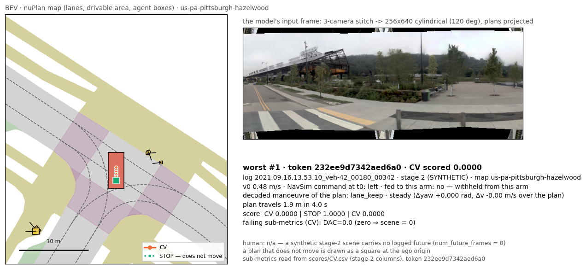
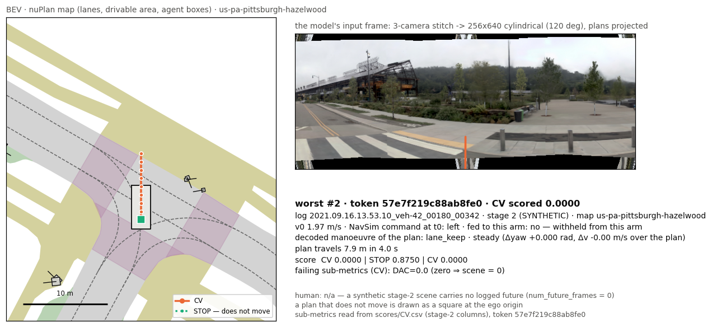
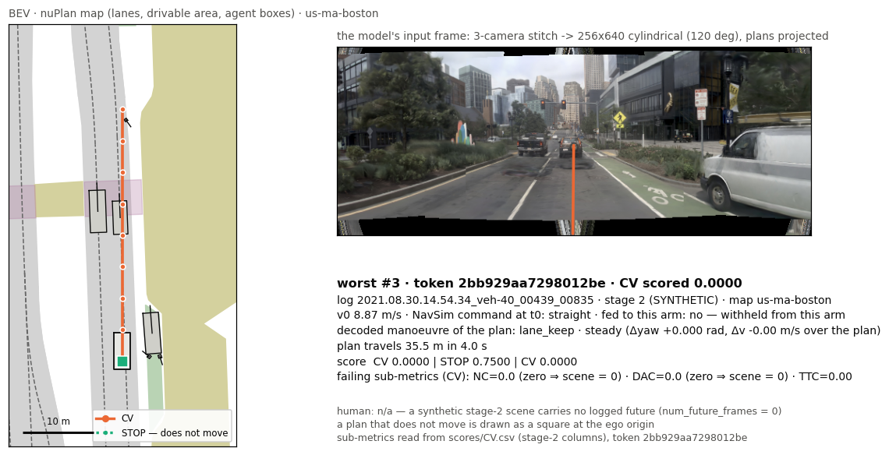
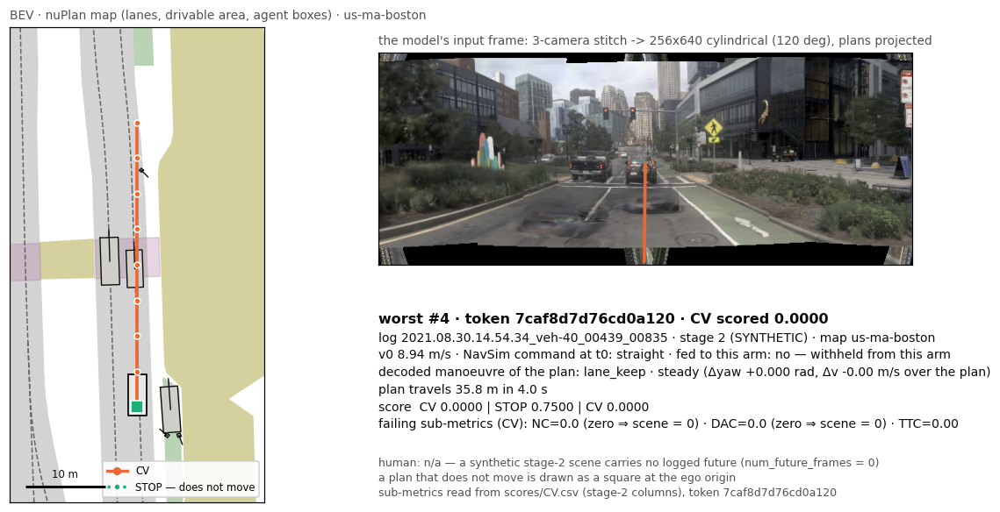
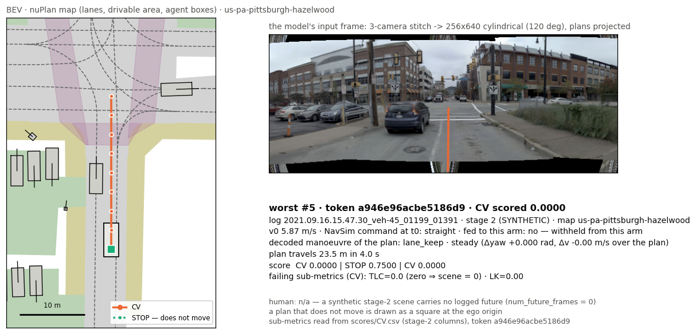
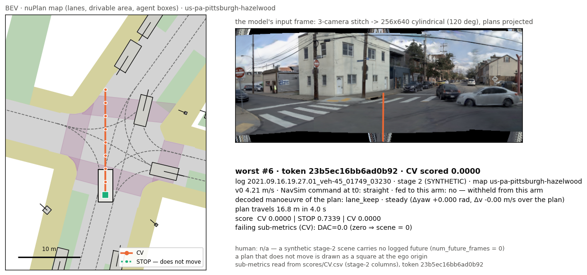
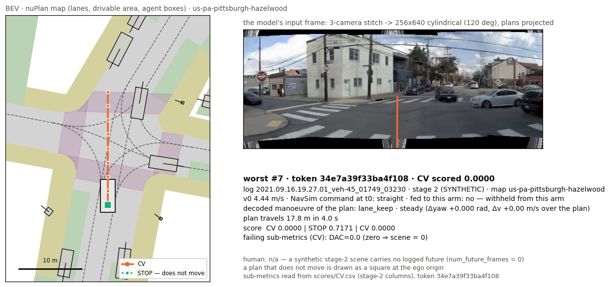
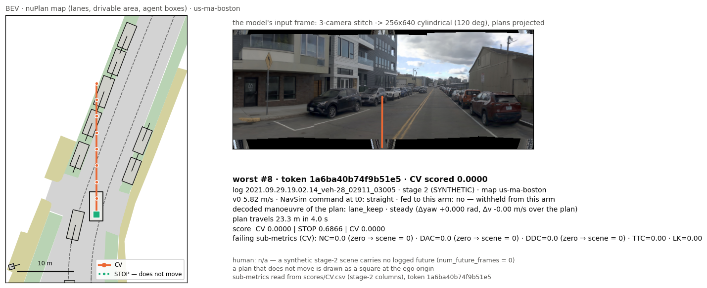

navsim_v2 · warmup_two_stage — CV
benchmark / split navsim_v2 / warmup_two_stagescenes · logs 220 · 7checkpoint —device noneinterval ?claim-bearing True
1 · Headline vs the mandatory floors
Each axis carries ONE statistic of ONE protocol. Floors (STOP, CV) are the labelled reference lines; our arms are bars (the primary arm in the accent colour); published rows are hollow bars and appear ONLY on the axis of their own protocol tag.
EPDMS — the protocol's official statistic
EPDMS_v2_warmup_two_stage from D:\Projects\TanitAD\products\P7-TanitEval\benchmarks\published_results.json (other protocols in that file are never drawn here). Interval per arm (never an empty cell — the settled estimator is the LOG-CLUSTER bootstrap, clusters = log_name, B = 2000, n ≥ 8 clusters):
No interval: CV, STOP — UNAVAILABLE (n 7): ⛔ warmup NEVER carries a CI — D-BENCH-PORT (PI approval 2026-08-29): 7 log groups < the RG-14 floor of 8 (products/P7-TanitEval/RELEASE_GATE.md); the 7 is re-read from scene_filter/warmup_two_stage.yaml log_names on every run.
table view
| arm | ×100 | fraction | interval | inputs | kind |
|---|---|---|---|---|---|
| STOP | 30.0902 | 0.3009 | UNAVAILABLE (n 7) — ⛔ warmup NEVER carries a CI — D-BENCH-PORT (PI approval 2026-08-29): 7 log groups < the RG-14 floor of 8 (products/P7-TanitEval/RELEASE_GATE.md); the 7 is re-r… | — | floor |
| CV | 18.5356 | 0.1854 | UNAVAILABLE (n 7) — ⛔ warmup NEVER carries a CI — D-BENCH-PORT (PI approval 2026-08-29): 7 log groups < the RG-14 floor of 8 (products/P7-TanitEval/RELEASE_GATE.md); the 7 is re-r… | — | floor |
| baseline_constant_velocity (HF warmup leaderboard) [published · warmup.hf_cv] | 18.5356 | — | yes | INHERITED |
S2-EPDMS-u — the statistic every arm has on this run
table view
| arm | S2-EPDMS-u |
|---|---|
| STOP | 0.5212 |
| CV | 0.3971 |
2 · Paired per-scene win / tie / loss vs each floor
Per scene: arm − floor on the identical tokens. A win on more scenes can still lose on the mean when its losses are multiplicative zeros — read the count beside the Δ, never alone. ⛔ On a two-stage protocol the stages have DIFFERENT token sets, so a per-stage count and a pooled count are different quantities: every chart below states the SCOPE it was counted over.
vs STOP
table view (Δ per scope)
| arm | Δ official | Δ S2-EPDMS-u | Δ mean (two) | W/T/L (two) | Δ mean (one) | W/T/L (one) | Δ mean (pooled) | W/T/L (pooled) |
|---|---|---|---|---|---|---|---|---|
| CV | -0.1155 | -0.1241 | -0.1307 | 83 / 38 / 83 | -0.1174 | 8 / 0 / 8 | — | 91 / 38 / 91 |
vs CV
table view (Δ per scope)
| arm | Δ official | Δ S2-EPDMS-u | Δ mean (two) | W/T/L (two) | Δ mean (one) | W/T/L (one) | Δ mean (pooled) | W/T/L (pooled) |
|---|---|---|---|---|---|---|---|---|
| STOP | +0.1155 | +0.1241 | +0.1307 | 83 / 38 / 83 | +0.1174 | 8 / 0 / 8 | — | 91 / 38 / 91 |
3 · Sub-metrics per stage, and the multiplicative zeros
EPDMS_v2: multipliers NC, DAC, DDC, TLC (a zero anywhere zeroes the scene) × weighted EP·5, TTC·5, LK·2, HC·2, EC·2 / 16. Uniform scene means of the devkit per-token rows; a stage an arm did not answer itself is refused with its reason.
stage two
| arm | score | NC | DAC | DDC | TLC | EP | TTC | LK | HC | EC |
|---|---|---|---|---|---|---|---|---|---|---|
| CV | 0.334 | 0.675 | 0.639 | 0.805 | 0.875 | 0.760 | 0.675 | 0.615 | 0.996 | 0.721 |
| STOP | 0.521 | 0.942 | 0.928 | 0.986 | 0.979 | 0.341 | 0.942 | 0.614 | 0.704 | 0.272 |
stage one
| arm | score | NC | DAC | DDC | TLC | EP | TTC | LK | HC | EC |
|---|---|---|---|---|---|---|---|---|---|---|
| CV | 0.460 | 0.719 | 0.625 | 0.906 | 1.000 | 0.845 | 0.688 | 1.000 | 1.000 | 0.875 |
| STOP | 0.578 | 1.000 | 1.000 | 1.000 | 1.000 | 0.374 | 1.000 | 1.000 | 0.188 | 0.000 |
4 · Per log
table view (all arms × logs)
| arm | 08.16.14.23.37·00015 | 08.30.14.54.34·00439 | 09.16.13.53.10·00180 | 09.16.15.47.30·01199 | 09.16.19.27.01·01749 | 09.29.19.02.14·02911 | 10.06.08.16.17·01590 |
|---|---|---|---|---|---|---|---|
| CV | 0.698 | 0.429 | 0.238 | 0.252 | 0.544 | 0.266 | 0.501 |
| STOP | 0.466 | 0.563 | 0.564 | 0.422 | 0.686 | 0.403 | 0.631 |
5 · Per t0-speed band
No per-speed-band block in this run.
6 · The four metric families
OUR instruments on trajectory geometry — not NavSim's score. Binding (PI 2026-08-02): all four, per family, never pooled; a family that cannot be computed is shown with its reason and n, never dropped.
LONGITUDINAL
| arm | status | n | speed MAE (m/s) | along-track MAE (m) | accel MAE (m/s²) | speed within 1 m/s (frac) | progress ratio (×) | reason / scope |
|---|---|---|---|---|---|---|---|---|
| CV | ◐ PARTIAL | 16 | 0.893 | 1.267 | 0.464 | — | — | distance-keeping UNAVAILABLE: no lead-agent track supplied — pass `lead=` (see this function's … |
| STOP | ◐ PARTIAL | 16 | 6.928 | 15.508 | 0.464 | — | — | distance-keeping UNAVAILABLE: no lead-agent track supplied — pass `lead=` (see this function's … |
LATERAL
| arm | status | n | cross-track MAE (m) | heading MAE (°) | curvature MAE (1/m) | yaw-rate MAE (°/s) | reason / scope |
|---|---|---|---|---|---|---|---|
| CV | ✓ OK | 16 | 1.066 | 7.48 | 0.0155 | 4.47 | |
| STOP | ◐ PARTIAL | 16 | 1.066 | — | — | — | undefined or refused terms — heading_mae_deg: heading_mae_deg is UNDEFINED for this plan: 128 s… |
⚠ CV, STOP read the SAME cross-track (1.0658 m) — the offset cannot separate them; a moving arm and a standing one tie here by construction.
| arm | cross_mae_m (m) | along-track context (m) | headline.pathgeom_crosstrack_m (lateral.py::frenet_dense) |
|---|---|---|---|
| CV | 1.0658 | 1.2669 · LONGITUDINAL family (along_mae_m) | not in this run — headline.pathgeom_crosstrack_m (lateral.py::frenet_dense) |
| STOP | 1.0658 | 15.5075 · LONGITUDINAL family (along_mae_m) | not in this run — headline.pathgeom_crosstrack_m (lateral.py::frenet_dense) |
TACTICAL
| arm | status | n | lateral decision acc (frac) | lateral κ | longitudinal decision acc (frac) | longitudinal κ | goal-point error (m) | goal bearing MAE (°) | reason / scope |
|---|---|---|---|---|---|---|---|---|---|
| CV | ✓ OK | 16 | — | — | — | — | — | — | |
| STOP | ✓ OK | 16 | — | — | — | — | — | — |
STRATEGIC
| arm | status | n | nav compliance (true cmd) (frac) | Δ vs nav withheld | reason / scope |
|---|---|---|---|---|---|
| CV | – UNAVAILABLE | 16 | — | — | PhysicalAI-AV carries NO map, NO lane graph, NO junction/roundabout label, NO traffic-light fea… |
| STOP | – UNAVAILABLE | 16 | — | — | PhysicalAI-AV carries NO map, NO lane graph, NO junction/roundabout label, NO traffic-light fea… |
7 · Failure gallery — the worst scenes
stage-2 scenes the arm answered itself, ranked by the arm's per-scene `score` ascending, then by its deficit against the best floor on that scene, then by token; at most 2 per log — 8 of 204 candidate scenes. Left: the nuPlan map (lanes, drivable area, agent boxes) drawn by the NavSim devkit's own navsim.visualization, with our plan against the floors. Right: the stitched 3-camera 256×640 cylindrical frame the model actually saw, with the same plans projected through the frame bank's own ray model. Below each: command, decoded manoeuvre and the failing sub-metrics.

log 2021.09.16.13.53.10_veh-42_00180_00342 · stage 2 (SYNTHETIC) · map us-pa-pittsburgh-hazelwood · v0 0.48 m/s · NavSim command at t0: left · fed to this arm: no — withheld from this arm

log 2021.09.16.13.53.10_veh-42_00180_00342 · stage 2 (SYNTHETIC) · map us-pa-pittsburgh-hazelwood · v0 1.97 m/s · NavSim command at t0: left · fed to this arm: no — withheld from this arm

log 2021.08.30.14.54.34_veh-40_00439_00835 · stage 2 (SYNTHETIC) · map us-ma-boston · v0 8.87 m/s · NavSim command at t0: straight · fed to this arm: no — withheld from this arm

log 2021.08.30.14.54.34_veh-40_00439_00835 · stage 2 (SYNTHETIC) · map us-ma-boston · v0 8.94 m/s · NavSim command at t0: straight · fed to this arm: no — withheld from this arm

log 2021.09.16.15.47.30_veh-45_01199_01391 · stage 2 (SYNTHETIC) · map us-pa-pittsburgh-hazelwood · v0 5.87 m/s · NavSim command at t0: straight · fed to this arm: no — withheld from this arm

log 2021.09.16.19.27.01_veh-45_01749_03230 · stage 2 (SYNTHETIC) · map us-pa-pittsburgh-hazelwood · v0 4.21 m/s · NavSim command at t0: straight · fed to this arm: no — withheld from this arm

log 2021.09.16.19.27.01_veh-45_01749_03230 · stage 2 (SYNTHETIC) · map us-pa-pittsburgh-hazelwood · v0 4.44 m/s · NavSim command at t0: straight · fed to this arm: no — withheld from this arm

log 2021.09.29.19.02.14_veh-28_02911_03005 · stage 2 (SYNTHETIC) · map us-ma-boston · v0 5.82 m/s · NavSim command at t0: straight · fed to this arm: no — withheld from this arm
renderer: ["C:\\Users\\Admin\\navsim-crun\\venv\\Scripts\\python.exe", "D:\\Projects\\TanitAD\\taniteval\\taniteval\\benchreport\\navsim_gallery.py", "--job", "taniteval\\results\\bench\\navsim_v2\\warmup_two_s (python 3.9.25) · manifest manifest.json
8 · Provenance and integrity
| run | 20260920T075608Z-navsim_v2-none-5e2458 · utc 2026-09-20T07:56:09Z · status COMPLETE |
|---|---|
| git HEAD | UNAVAILABLE FileNotFoundError: [WinError 2] Das System kann die angegebene Datei nicht finden |
| checkpoint | — · — · sha256 — |
| devkit | autonomousvision/navsim@UNAVAILABLE
|
| schema (W1 v1) |
|
| source | taniteval.bench · · leaderboard-eligible True |
| number check | PASS — 193 numbers and 7 refusals re-read from this HTML and checked against summary.json by an independent parser; 0 errors, 0 coverage gaps |
| gallery | RENDERED: 8/8 scenes |
arms
| arm | kind | role | status | declared inputs | files |
|---|---|---|---|---|---|
| CV | floor | OK | ego_velocity[t0] | scores · artifact · plans · criteria · counts · wrapper_manifest · hooks · final_scores_frame | |
| STOP | floor | OK | none | scores · artifact · plans · criteria · counts · wrapper_manifest · hooks · final_scores_frame |
controls carried by the run
| arm_notes | [] |
|---|---|
| route_command_is_a_route_level_oracle | {"what": "NavSim driving_command is a ROUTE-LEVEL ORACLE", "source": "W2 / E3 (2026-09-20), four probes", "verdict": {"status": "CHECKED", "verdict": "PARTIAL — ROUTE-LEVEL ORACLE", "evidence_class": "PUBLISHED-CODE (mechanism) + MEASURED (four empirical probes)", "one_line": "driving_command is computed from (the ego pose NOW, nuPlan's route, the map) — not from the expert's future trajectory — … |
| gallery_inputs | {"CV": {"status": "OK", "n": 220, "path": "CV.npz", "shape": [220, 8, 3], "sampling": [8, 0.5], "n_cv_standin": 0, "poses_from": "the scorer's own pdm_score hook (what the official runner executed)"}, "STOP": {"status": "OK", "n": 220, "path": "STOP.npz", "shape": [220, 8, 3], "sampling": [8, 0.5], "n_cv_standin": 0, "poses_from": "the scorer's own pdm_score hook (what the official runner execute… |
| scoring_counts | {"CV": {"status": "PASS", "failures": [], "wall_s": 142.6, "log_successful": 220, "log_failed": 0, "csv_valid_rows": 220, "agent_calls": null}, "STOP": {"status": "PASS", "failures": [], "wall_s": 149.6, "log_successful": 220, "log_failed": 0, "csv_valid_rows": 220, "agent_calls": {"seam": 220, "cv_standin": 0, "UNKNOWN_TOKEN": 0}}} |
summary.json sha256 a477b5092e884920 · every number above is stamped with its summary.json pointer and re-checked by parsing this file (taniteval.benchreport.verify).